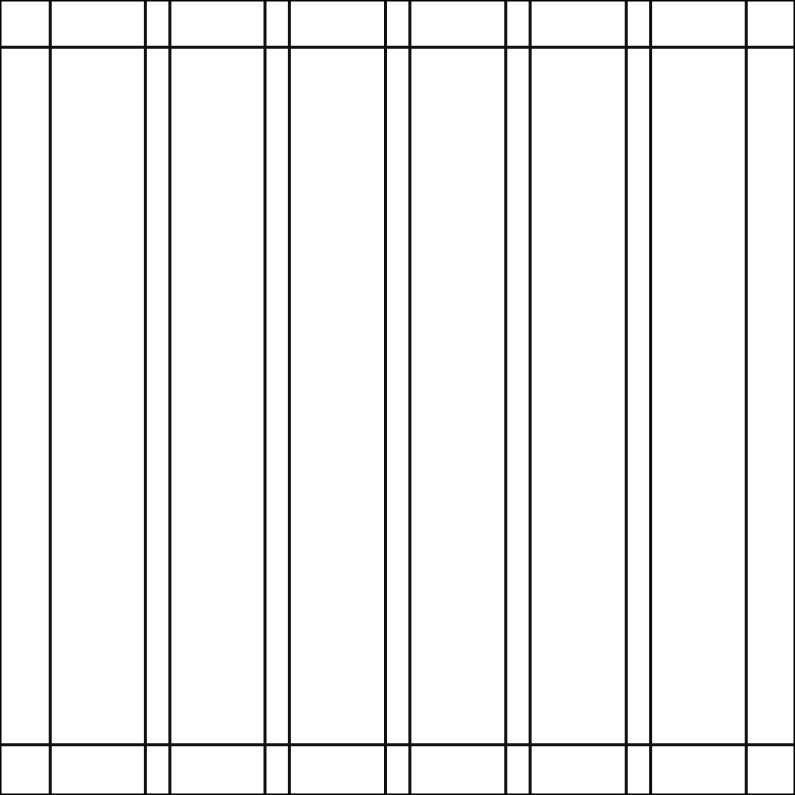

Логотип и знак
Общие сведения
Оптический кернинг, уточненный вес и определенное свободное пространство, а также четко очерченное размещение по отношению к другому контенту — всё это помогает сделать логотип максимально узнаваемым во всех размерах и во всех контекстах.
Логотип
Построение
Наш логотип основан на буквах высоконтрастной антиквы и динамичных рукописных элементах, и в совокупности иллюстрирует экспериметальный характер бренда. Толщины спроектированы так, чтобы даже при уменьшенном масштабе название бренда могло считываться.

Охранная зона
Охранная зона вокруг логотипа равна высоте рукописного элемента «е».
Правила использования знака
Наш знак используется во всех тех случаях, когда логотип не может сохранять охранную зону или не выдерживает маленький масштаб. Однако также может использоваться в некоторых композиционных решениях.
Знак

Цвет и масштаб
Логотип и знак должны быть белыми на темном фоне и черными на светлом фоне.
Масштаб
Наш логотип предназначен для масштабирования до небольших размеров при печати и на экране. Наименьший размер: 70px в ширину / 3 см в ширину.
Размещение
Размещение логотипа и знака зависит от типа коммуникации и использования.

Обычная коммуникация, состоящая из текста. Следует размещать знак — слева внизу композиции.

Симметричные композиции с медиаконтеном. В зависимости от контента логотип может располагаться либо к югу от вставки, либо к северу в композиции.
Партнеры
Выравнивание партнерских логотипов должно соответствовать правилам охранной зоны. Однако высота партнерского логотипа не должна превышать апострофа нашего логотипа. Разделительную линию между логотипами можно создать с помощью глифа «е» того же размера, что и в логотипе.
Иконки
Иконки приложений разрабатываются индивидуально. Они являются исключением из правил использования свободного пространства и имеют оптический размер, чтобы наилучшим образом соответствовать каждой форме.
Построение иконки
Разделите область на 5 равных колонок. Поставьте фирменный знак в ширину 3-х колонок и выровняйте центрально по вертикали и по горизонтали.
Ошибки использования

Ограничение использования только черным или белым дает нам самый высокий коэффициент контрастности, облегчая доступность.

Не используйте логотип вместе со знаками, которые можно принять за логотипы.

Не растягивайте и не изменяйте логотип.

Не переворачиваете логотип и не ставьте логотип вертикально.
Цвет
Основные цвета
Наши основные фирменные цвета — белый и черный. Они используются для обеспечения доступности, простоты и последовательности во всех коммуникациях бренда.
Белый

RGB — 255 255 255 CMYK — 0 0 0 0 HEX — FFFFFF
Черный
RGB — 16 16 16 CMYK — 0 0 0 94 HEX — 101010
Градиенты
Наши градиенты вытекают из цветов разных коктейлей. Их следует экономно использовать в иллюстрациях, фотографиях и продуктах, чтобы сохранить смысл и действенность.


Fruit Orange


Blue Sea


Violet Beach


Cold Lavanda

Kiwi Green
Построение
Fruit Orange

RGB — 255 189 91 CMYK — 0 26 64 1 HEX — FFBD5B
RGB — 255 144 71 CMYK — 0 44 72 1 HEX — FF9047
RGB — 235 72 67 CMYK — 0 69 71 8 HEX — EB4843
Blue Sea

RGB — 0 241 214 CMYK — 100 0 11 5 HEX — 00F1D6
RGB — 81 208 225 CMYK — 64 8 0 12 HEX — 51D0E1
RGB — 0 157 244 CMYK — 100 36 0 4 HEX — 009DF4
Violet Beach

RGB — 226 140 207 CMYK — 0 38 8 11 HEX — E28CCF
RGB — 255 173 173 CMYK — 0 32 32 1 HEX — FFADAD
RGB — 255 210 80 CMYK — 0 18 69 1 HEX — FFD250
Cold Lavanda

RGB — 255 171 236 CMYK — 0 33 7 1 HEX — FFABEC
RGB — 219 173 255 CMYK — 14 32 0 1 HEX — DBADFF
RGB — 151 195 255 CMYK — 41 24 0 1 HEX — 97C3FF
Kiwi Green

RGB — 116 222 255 CMYK — 55 13 0 1 HEX — 74DEFF
RGB — 118 252 187 CMYK — 53 26 0 1 HEX — 76FCBB
RGB — 159 255 83 CMYK — 38 67 0 1 HEX — 9FFF53
Пропорции
Важно соблюдать правила этих пропорций при создании любой коммуникации бренда, чтобы поддерживать последовательность бренда и оставаться доступным для всех людей. Белый цвет играет очень важную роль во всех коммуникациях бренда и должен обеспечивать баланс с черным. Градиенты разумно используются для иллюстраций и внутри продукта в зависимости от медиаконтента.
Основные цвета

Градиенты


Композиция
Наша система композиции элегантна своей абсолютной простотой использования. За счет определения сетки на основе знака (и изучения того, как столбцы масштабируются в композициях разного размера), система остается гибкой и очень простой в применении.
Элементы
Руководство по сетке
Текст и логотип / знак

Примеры